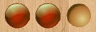
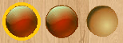
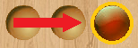
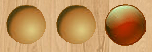
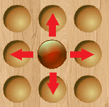
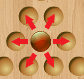

How to Play
Peg Solitaire is played on a board with holes that are initially filled in with pegs.
Goal: The objective of the game is to have only one peg remaining at the end.
A peg is removed by jumping another peg over it. In addition, the jumping peg must jump over exactly that one peg and then land in an empty hole. This means that the original position of a peg being removed is directly in between the jumping peg and an empty hole.
The following set of images helps demonstrate how the game is played and how to make valid moves.

Original position of pegs

The jumping peg is the one that is highlighted

The peg has jumped and the middle peg is therefore removed

Final position of peg
In this application, if the player is trying to make a move that is not valid, the peg will return to its original spot.
Cross and Octagon Board Moves
On the Cross board or the Octagon board, pieces may only move vertically or horizontally.

Valid directions to move pieces on the Cross or Octagon board
Triangle Board Moves
On the Triangle board, pieces may only move diagonally or horizontally.

Valid directions to move pieces on the Triangle board